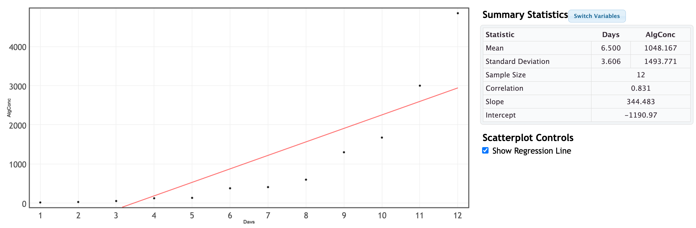
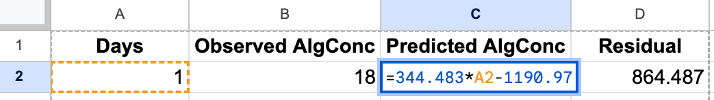
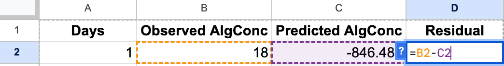
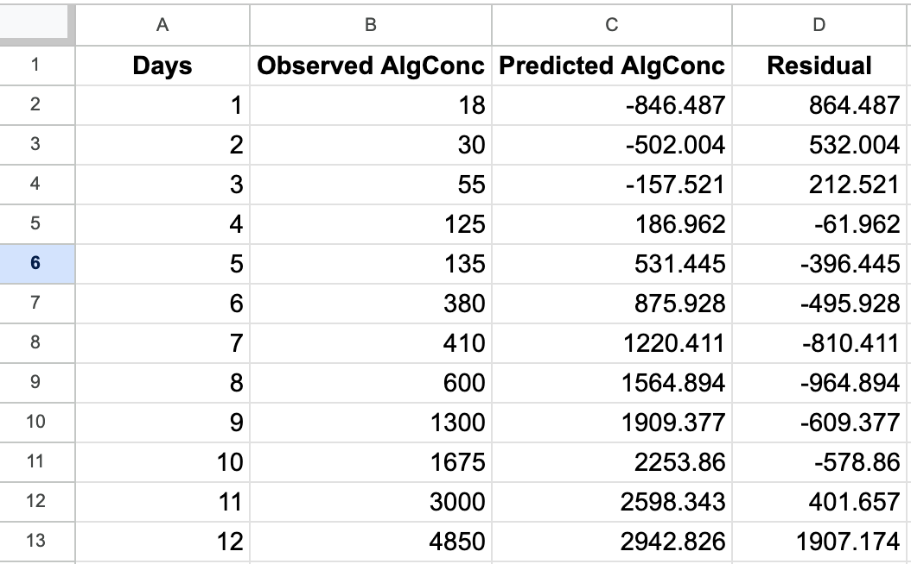
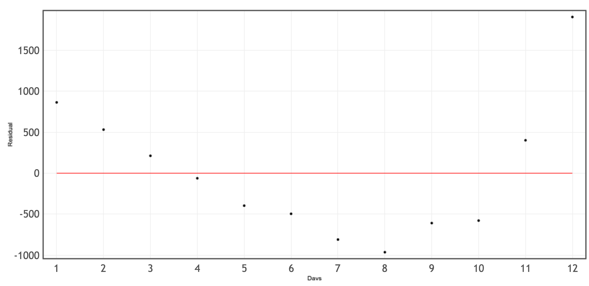
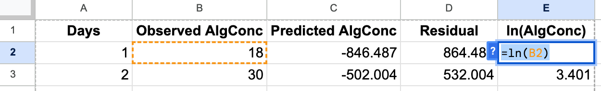
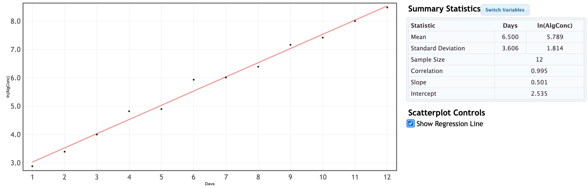
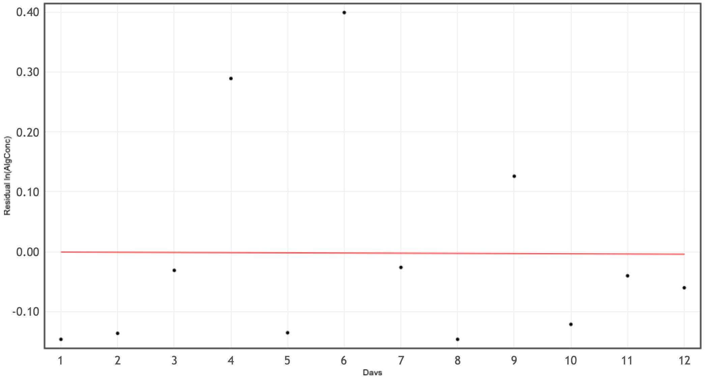

Transforming Quantiative Relationships
In the last section, we emphasized the importance of meeting the conditions for using a linear model before interpreting the results. Up until now, we have only presented this as a problem without a solution. If our data does not satisfy one or more of the conditions, it is often a solution to transform, or reexpress one, or both, of your variables so that the conditions are reasonably satisfied
Example: Using a Semi-Log Transformation on Algae Concentration over Time
We have data on algae concentration in a lake over during early bloom growth over time in days.
1. Create a Scatter Plot of Original Data
| Days | Algae Concentration (cells/mL) |
|---|---|
| 1 | 18 |
| 2 | 30 |
| 3 | 55 |
| 4 | 125 |
| 5 | 135 |
| 6 | 380 |
| 7 | 410 |
| 8 | 600 |
| 9 | 1300 |
| 10 | 1675 |
| 11 | 3000 |
| 12 | 4850 |

The pattern is clearly nonlinear (curved upward). We can also create a residual plot to more clearly see the issue with our linear model.
2 Creating the Residual Plot
To create the residual plot, we note the slope and intercept of the regression in our image above and have the least-squares equation:
$$ \widehat{AlgConc} = -1190.97 + 344.483x $$
To create the residual plot, we recall that the residual be the observed algae concentration minus the predicted algae concentration.
$$AlgConc-\widehat{AlgConc}$$
Using Google Sheets, we can create a column for the predicted algae concentration using the formula $=344.483*A2-1190.97$ in cell C2, and a column for residuals unsing the formula $=B2-C2$ in cell $D2$.


If we apply those formulas to all 12 rows we get

We can upload this data as a csv file to StatKey and select $x=$ Days and $y=$ Residual and we see the pattern expressed in the residuals.

Residuals show a clear curved pattern → linear model is inappropriate.
3. Transforming the Data
Our goal is to transform the data so that the our relationship between Days and Algae Concentration can be expressed as a linear relationship. Choosing the appropraite transformation can be tricky, and often involves some trial and error. The first step is identifying the patterns you wish to eliminate. Here we notice what might be exponential growth. We see this from the upward curvature of the original plot, but also we know that population growth often follows an exponential pattern. We learned previously that the logarithm will "undo" exponential growth, effectively linearizing the model. We will try a semi-log plot where we apply the logarithm to the algal concentration. Using the natural log, we will create a column in our Google Sheet called $ln(AlgConc)$ and use the formula $=ln(B2)$ in cell E2.

Then apply this formula to all 12 days, and then we download the updated Google Sheet as a csv file.
4. Plot the Semi-Log Data
We upload our csv file to StatKey and see the following plot.

The transformed data appear approximately linear.
5. Check the Semi-Log Model for Linearity
Fitted model:
$$ \widehat{\ln(\mathrm{AlgConc})} = 2.535 + 0.501(\mathrm{Days}) $$
Residuals for our model can be added to our Google Sheet:
$$ \ln(AlgConc) - \widehat{\ln(AlgConc)} $$

We note that a residuals are now showing no systematic pattern. Our semi-log transformation was successfull!
6. Use the Model
Now that we have met the conditions for a linear model, we can use it to make make predictions/estimates. For example, we can predict the algae concentration after 7 days as follows.
$$ \widehat{\ln(\mathrm{AlgConc})} = 2.535 + 0.501(7) $$
$$ \widehat{\ln(\mathrm{AlgConc})}= 6.042 $$
So we predcit the natural log of the algae concentration is 6.042. To convert back to the actual algae concentration, we rewrite the log equation above in exponential form:
$$ \mathrm{AlgConc}=e^{6.042} $$
and
$$e^{6.042}\approx 420.7 \mathrm{cells/mL}$$
Note that this estimate is close to the observed concentration of 410 cells/mL after 7 days the original dataset.
Summary
- Original model: poor fiting line, scatterplot showed curvature, and residual plot showed a pattern
- Semi-log model: linear scatterplot, randomly scattered residuals.
- To use the semi-log model to predict values of the response variable we must remember to rewrite the log expression in exponential form.
- Why does a semi-log transformation work in this situation? The log transformation of a response variable offset the exponential growth of the $y$-values while keeping the explantory values unchanged.